Наука · журнал «ДентАрт» 2024 №1
Терапевтичний талант: дослідження феномену
THERAPEUTIC TALENT: STUDY OF THE PHENOMENON
Закінчення. Початок у № 4 за 2023 рік. Читати Частину I →
Стаття була підготовлена для «Журналу Інтегративної Психотерапії і Системного Аналізу» (2024 рік) і для «ДентАрту».
Дослідження терапевтичного таланту
Як вивчити таке невловиме явище, як терапевтичний талант? Обираючи методи дослідження, не хотілося б виявити примітивізм, а тому саме змішаний дизайн та феноменологічне дослідження виявилися найбільш придатними: кількісно-якісне, феноменологічне дослідження терапевтичного таланту, спрямоване на вивчення ТТ з перспективи пацієнта, через його сприйняття та досвід. Замість використання заздалегідь сформульованих теоретичних припущень про те, що таке терапевтичний талант, ми прагнули поринути у світ пацієнта, щоб зрозуміти його досвід взаємодії з терапевтом, виявити важливі аспекти, які клієнти цінують у своїх терапевтах, відносячи до галузі таланту, і далі на основі отриманих даних виявили фактори, що визначають терапевтичний талант та його прояви. Отримані результати співвіднесені з теоретичними моделями.
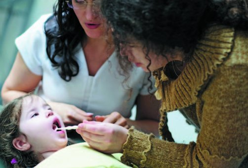
Вибірка
У дослідженні взяли участь 64 особи віком від 18 до 65 років, серед яких 77 % – жінки і 23 % – чоловіки. Усі учасники дослідження мали досвід спілкування з терапевтами-медиками, і 78 % учасників дослідження вважали, що мали досвід взаємодії з талановитим терапевтом. 53,1 % респондентів мали досвід взаємодії з психотерапевтом, однак лише менше половини (40,6 %) з них відзначили, що цей психотерапевт мав терапевтичний талант.
У дослідженні також взяли участь представники двох професій, у контексті яких вивчався терапевтичний талант: фахівець у галузі немедичної психотерапії (досвідчений психолог, екзистенційний психотерапевт та супервізор) і лікар-стоматолог, доктор психологічних наук.
Методики дослідження:
- бесіда на тему терапевтичного таланту із представниками двох професій (психологом/психотерапевтом та лікарем-стоматологом);
- метафоричні описи терапевтичного таланту (дослідження за допомогою метафоричних образів, згідно з початковим припущенням, дозволяє не тільки рухатися раціональним шляхом, а й охопити більше, неочевидне...);
- анкетування на тему терапевтичного таланту. Відкриті питання анкети у своїй сукупності дозволили вивчити феномен із 3-х перспектив: афективної, когнітивної та поведінкової. Загальна кількість питань – 24, але в цій статті обговорюються результати, отримані за кількома з них, що розкривають розуміння суті терапевтичного таланту та його проявів.
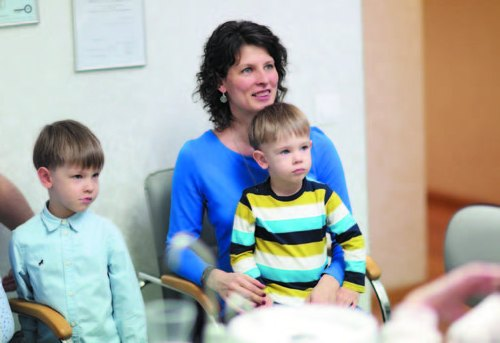
Нижче подано загальний список питань дослідження (відповіді, отримані на виділені курсивом питання, аналізуються в нашому дослідженні):
- Як Ви вважаєте, чи існує терапевтичний талант? І якщо так, то що це таке?
- Чи могли б Ви описати метафорично, що таке терапевтичний талант?
- Чи був у Вас досвід спілкування з лікарем (медиком), який має терапевтичний талант?
- Якщо «так», то як Ви зрозуміли, що лікар талановитий?
- Як саме виявлявся талант Вашого лікаря?
- Чи відчували Ви себе поруч із цим лікарем, перебуваючи в одному просторі, якось особливо? Якщо так, то що в цьому відчутті було особливим?
- Які почуття Ви відчували стосовно цього лікаря?
- Що, на Вашу думку, відрізняло цього лікаря від інших фахівців?
- Чи були характерні для нього особливість мислення, погляд на життя? Якщо так, то в чому саме це виявлялося?
- Чи була у цього лікаря особливість поведінки з Вами особисто чи взагалі?
- Що такого особливого робив лікар, які його дії були для Вас значущими?
- Що в терапії з ним було найціннішим?
- Що значущого відбувалося у житті після спілкування? Чи пов'язуєте ці події з досвідом взаємодії з Вашим лікарем?
- Чи був у Вас досвід роботи із психотерапевтом (не медиком), психологом?
- Чи був у Вас досвід роботи з талановитим психотерапевтом (не медиком), психологом?
- Як саме виявлявся талант Вашого психотерапевта, психолога (далі терапевта)?
- Чи відчували Ви себе поруч із цим терапевтом якось особливо, перебуваючи в одному просторі? Якщо так, то що в цьому почутті було особливим?
- Які почуття Ви відчували стосовно цього терапевта?
- Що, на Вашу думку, відрізняло цього терапевта від інших фахівців?
- Чи були характерні для нього особливість мислення, погляд на життя? Якщо так, то в чому саме це виявлялося?
- Чи була у терапевта особливість поведінки з Вами особисто чи взагалі?
- Що такого особливого робив терапевт, які його дії були для Вас значущими?
- Що в терапії з ним було найціннішим?
- Що значущого відбувалося у житті після спілкування? Чи пов'язуєте ці події з досвідом взаємодії з Вашим терапевтом?
Процедура дослідження
Анкетування 64 респондентів відбувалося онлайн. Учасникам пропонувалося заповнити анкету, подану в електронному документі, дотримуючись інструкції, наданої письмово. Отримані дані були конфіденційними.
Розмова велася і з представниками двох професій. З екзистенційним терапевтом бесіда проходила очно, протягом 30 хв, і протягом 30 хв онлайн з лікарем-стоматологом. Було поставлено запитання: «Чи існує терапевтичний талант?», «Як Ви розумієте терапевтичний талант», «Які фактори впливають на терапевтичний процес?».
Методи аналізу даних
Отримані дані аналізувалися кількісно та якісно. На першому етапі всі відповіді учасників були занесені в таблиці первинної обробки даних, демографічні показники та закриті відповіді на питання анкети були підраховані статистично. Відповіді на запитання (у тому числі описані метафори ТТ) були проаналізовані та поділені на категорії, після чого здійснено факторний аналіз, що дозволив виділити різні аспекти і прояви психотерапевтичного таланту, описати структуру феномену.
При аналізі метафор враховувався чинник суб'єктивності їхнього розуміння, тому, розкриваючи метафоричний зміст, було важливим: а) звертатися до зовнішніх джерел, що описують значення символів (тлумачення образів у літературі), і б) категоризувати у спільному обговоренні робочої групи колег. При цьому, як уже було згадано, це дослідження, швидше, феноменологічне, описове, а не доказове. Проведені бесіди на тему терапевтичного таланту з представниками двох професій були подані в дослідженні описово, як приклад роздумів про предмет, що вивчається, доповнюючи теоретичний погляд на феномен ТТ.
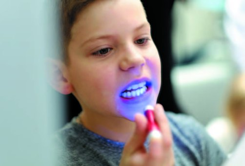
Результати дослідження та їх обговорення
Розуміння терапевтичного таланту
Дослідження засвідчило, що немає відмінностей у сприйнятті таланту терапевта-медика та гуманістичного психотерапевта: учасники дослідження не виділяли будь-якої специфіки, даючи єдиний опис феномену, а тому в цьому дослідженні ми продовжуємо говорити про терапевтичний талант як єдиний для представників помічних професій, тобто пов'язаних з наданням допомоги людям. Вільні визначення такого таланту (питання анкети «Як Ви вважаєте, чи існує терапевтичний талант? І якщо так, то що це таке?») дозволили отримати 64 відповіді, які були розбиті на 96 підкатегорій. Ці категорії були проаналізовані та надалі віднесені до 9 загальних категорій (рис. 1).
Терапевтичний талант був визначений як поєднання кількох важливих факторів, а саме: «Емпатії» (19,8 %), «Професіоналізму» (17,7 %), «Обдарованості/покликання» (14,6 %) та досить невизначеної «Сукупності унікальних навичок» (13,5 %). Такі результати були співставлені з метафоричними образами терапевтичного таланту, про які говорили респонденти і які дозволяють передати складніші та глибші відчуття, які часто важко висловити словами. Метафори були також проаналізовані, і в спільному колегіальному обговоренні їх змісти віднесені до категорій, що описують 10 факторів терапевтичного таланту, а саме: підтримка, обдарованість/покликання, професіоналізм, емпатія, здатність викликати довіру, уміння бачити багатовимірно, розуміння пацієнта/клієнта, інтуїція, щось непоясненне, дбайливість та акуратність (таблиця 1).
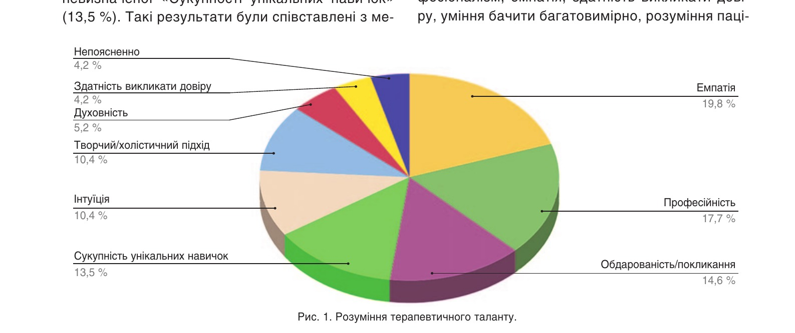
Рис. 1. Розуміння терапевтичного таланту.
| Метафора терапевтичного таланту | % |
|---|---|
| Підтримка | 19,48 |
| Обдарованість/покликання | 16,88 |
| Професіоналізм | 14,29 |
| Емпатія | 10,39 |
| Здатність викликати довіру | 9,09 |
| Уміння бачити багатовимірно | 6,49 |
| Розуміння пацієнта/клієнта та особливостей характеру | 6,49 |
| Інтуїція | 6,49 |
| Непоясненне | 6,49 |
| Дбайливість та акуратність | 2,60 |
| Наявність життєвого досвіду | 1,30 |
Згідно з отриманими результатами, терапевтичний талант є комплексом унікальних якостей і здібностей лікаря, що сприяють успішному процесу терапії та зціленню пацієнта, власне кажучи, тією самою «Сукупністю унікальних навичок», названою вище за вільного опису ТТ. Завдяки зробленому аналізу такі якості були конкретизовані. Користуючись розумінням таланту, як у І. Ялома, – як найважливішої «приправи» психотерапії, ми можемо зробити висновок, що вона складається з таких «інгредієнтів»:
Уміння надавати підтримку – найпоширеніша і ключова характеристика терапевтичного таланту, яку назвав кожний п'ятий респондент. Відображає потребу пацієнта та відповідну здатність терапевта забезпечувати емоційну, психологічну та духовну підтримку у процесі лікування. Терапевт уміє створити особливу довірливу атмосферу, яка б сприяла терапевтичному альянсу. Ось кілька прикладів метафор, віднесених до категорії «Підтримка»: «Життєдайне джерело», «Ковток води в пустелі», «Кожній квітці потрібна вода». Метафори підкреслюють потребу турботи та підтримки для зростання і розвитку. Терапевт, як «вода», є джерелом поживної сили, допомагаючи долати труднощі і знаходити шляхи до благополуччя пацієнта. Пустеля асоціюється з труднощами та самотністю. Терапевт, як «ковток води», приходить на допомогу, коли пацієнт почувається стражденним від спраги, «висушеним» і потребує «вологи» (можливості плакати разом та емоційної підтримки), щоб стати живішим.
Розуміння таланту терапевта через категорію підтримки співвідноситься з ідеєю значущості альянсу між лікарем та пацієнтом для терапевтичного процесу, про який пишуть автори-гуманісти (Рождерс, Бьюдженталь, Мей, Ялом). Таке розуміння узгоджується з результатами емпіричних досліджень. Зокрема, в роботі «Quality of Working Alliance in Psychotherapy» (Hersoug, 2001) ідеться про більшу сприйняту соціальну підтримку та вищий рівень комфорту за наявності близькості в міжособистісних відносинах, про те, що підтримка потрібна і часто навіть достатня для встановлення оптимального терапевтичного контакту у психотерапії.
Наступними «інгредієнтами» таланту є емпатія, здатність викликати довіру та здатність бачити багатовимірно.
Емпатія – це здатність терапевта бути в емоційному резонансі з пацієнтом, розуміння його внутрішнього стану і вираження цього розуміння – тобто донесення до нього того, що його розуміють: «Я розумію, що ти мене розумієш». Емпатичний терапевт здатний дивитися «очима пацієнта», відчувати, і відчувати без засудження, співпереживати та відгукуватися емоційно. Ось приклад метафори, що віднесена до категорії «Емпатія»: «Уміння тонко відчувати «струни душі» іншої людини та вміння (або щирі спроби) їх налаштовувати для того, щоб душа (= психіка) заграла свою унікальну, чудову мелодію». Терапевт, немов музикант, чує «музику» душі, гармонізує внутрішній світ пацієнта, допомагає йому розкрити свій потенціал і висловити свої переживання.
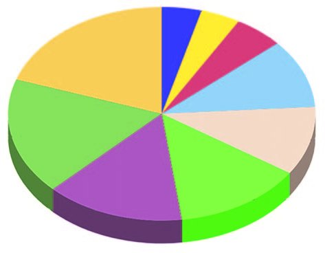
Наступний виділений чинник «Уміння бачити багатовимірно» (системне бачення) свідчить про здатність талановитого лікаря бачити цілісно. Терапевт допомагає розглянути ситуації під іншим кутом зору, панорамно та прицільно. Уміє вловлювати не лише очевидні аспекти, а й глибинні шари та взаємозв'язки, що допомагає пацієнтові отримати більш об'ємне розуміння себе та способу організації свого навколишнього світу.
Ось одна з метафор, віднесена до цієї категорії: терапевтичний талант – це «здатність ковзати поверхнею і водночас бачити найбільші глибини».
Деякі аспекти терапевтичного таланту, такі як непоясненність, дбайливість та акуратність, згадуються рідше, але також мають значущість (у діапазоні 6–2,6 %). Чотири респонденти вказали, що не можуть підібрати метафору, тому що терапевтичний талант важко пояснити або описати словами, але його можна відчути. «Посмішка Чеширського кота... посмішка є, а кота немає». Як у творі Льюїса Керрола «Аліса у Дивокраї» посмішку кота видно, але сам кіт залишається невидимим, так і терапевтичний талант має невловиму суть, проте відчутний у процесі терапії.
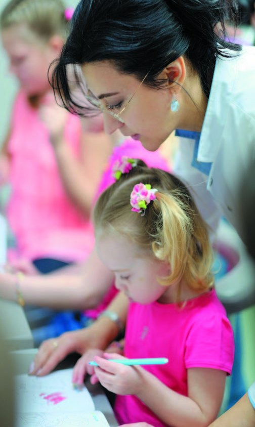
Талант також описується як обдарованість/покликання. Ця характеристика описує не стільки суть терапевтичного таланту, скільки його природу, а саме щось дане, вроджена невід'ємна якість, яка присутня незалежно від навчання або досвіду терапевта. У відповідності з теоретичним розумінням феномену, ми розуміємо терапевтичний талант і як природну схильність (здатність створювати певні відносини з людьми), і як якість, що розвивається, оскільки вміння викликати довіру, емпатія, системне бачення (уміння бачити багатовимірно) – це якості, які можуть розвиватися протягом життя. Фактично вони є однією з професійних компетенцій терапевта – уміння будувати та підтримувати терапевтичні відносини, що описується в моделі Мішель Сеттані з колегами (Settanni, Bronzini і співавт., 2022).
І відповідно до сказаного вище, на основі проведеного аналізу даних було виділено ще один фактор для опису терапевтичного таланту – «Професіоналізм», який нагадує нам про те, що талант – не лише дар, а й старанність. Названі 10 факторів були зведені до 3-х узагальнених, а саме:
- обдарованість (терапевтичний талант як уроджені здібності та природна схильність, сюди належать категорії «обдарованість/покликання», «щось непоясненне»);
- особливе емоційне ставлення (сюди належать категорії «підтримка», «емпатія» та «здатність викликати довіру»);
- професіоналізм (сюди належать власне категорія «професіоналізм», а також «здатність бачити багатовимірно», «розуміння особливостей характеру клієнта/пацієнта», «дбайливість та акуратність», «інтуїція»).
Тут хотілося б пояснити логіку віднесення категорії «інтуїція» саме до фактора «професіоналізм», оскільки це може бути не настільки очевидним. Інтуїція може бути зрозумілою у значенні здатності схоплювати ціле за відсутності повного набору його фрагментів та компонентів, вона «надає і досвіду, і мисленню якість транскордонності, а людській діяльності та пізнанню цілісність і доцільний характер» (Богатирьов, 2014, с. 16). Інтуїція часто розуміється як особлива чутливість, але, як свідчить її вивчення, багато в чому саме досвід і мислення є передумовами інтуїції, яка, латентно присутня і в досвіді, і в інтелекті, робить їх елементами людського пізнання (Богатирьов, 2014).
Багатство метафор, якими учасники дослідження описують терапевтичний талант, говорить про складність і багатогранність цього феномену. Талановитий терапевт здатний налаштовувати «струни душі» клієнта, знаходити «ключі» до його внутрішнього світу, знешкоджувати «мінні поля» його емоцій і заспокоювати, як Посейдон, некеровану стихію. Підтримувати, як Ангел Хранитель, і як Чарівник, допомагати пацієнтові знайти свою дорогу до зцілення та самопізнання. У таких метафоричних образах ми бачимо ідеалізацію, де терапевтичні відносини подаються у нереалістичному світлі, де терапевт постає у ролі Батьківської постаті (Мами чи великого Іншого). Такі відносини можна описати як відносини не рівних, і можна припустити, що, відкриваючи в терапії свою вразливу (дитячу) частку, пацієнт сподівається спертися на сильнішу дбайливу (материнську) фігуру або зовсім «передати себе в її руки».
У зв'язку з цим можна знову згадати дослідження Ісідори Бегні (Begni, 2005), де авторка, зокрема, торкається зв'язку терапевтичного таланту зі схильністю бути в батьківській позиції. Парентифікація, каталізуючи вибір професії психолога чи психотерапевта, позитивно впливає на емпатію, гнучкість меж і творчість, але й робить фахівців більш уразливими для заплутаних терапевтичних відносин, де пацієнт намагається порушувати межі та перекладати всю відповідальність на лікаря. Ідеалізація, виявлена у нашому дослідженні через призму метафор, применшує власні можливості пацієнта, який покладає надії на всемогутність терапевта, знімаючи власну відповідальність за бажані зміни у житті. Особливо у разі деструктивної парентифікації фахівцеві може знадобитися професійна підтримка, посилення турботи про себе, диференціації себе та інших, щоб мінімізувати ризик вплутування у подібні руйнівні відносини з пацієнтами (Begni, 2005).
Можливо також, що через рольові аспекти клієнти/пацієнти обирають певний тип взаємодії в терапії залежно від способу та глибини розуміння себе зараз. Тобто бачення в терапевті великого Іншого чи батьківської фігури може бути тимчасовим, певним етапом у терапії, на якому терапевтичний талант стає більш виразним для пацієнтів. Вони можуть надавати перевагу ролі терапевта – духовного наставника, взаємодії з терапевтом – невичерпним джерелом, пошуку інсайтів через спілкування з терапевтом-генієм чи отриманню підтримки від терапевтів – «ангелів та чарівників» або йти своїм темпом з терапевтом-провідником. У статті «Міжособистісна комплементарність і терапевтичний альянс: дослідження відносин у психотерапії» (Kiesler, Watkins, 1989) автори відзначають, що чим ближче діада до ідеальної доповнюваності, тим сильніший терапевтичний альянс, який сприймає пацієнт. І на певному етапі (і при певних порушеннях/травматичному досвіді) своєрідна залежність від терапевта є важливою умовою можливості в цілому продовжувати спільну роботу.
У ході дослідження були також отримані дані про прояви терапевтичного таланту (відповіді респондентів на питання анкети: «Як Ви зрозуміли, що лікар талановитий?», «Як саме виявлявся талант Вашого лікаря?»). У цьому випадку також були виділені основні категорії відповідей (рис. 2), які дещо відрізняються від описів терапевтичного таланту через метафори.
За допомогою факторного аналізу було виділено три загальні фактори. Два з них повторюють ті, що були виділені при аналізі метафор, і один новий:
- особливе емоційне ставлення (куди були віднесені здатність викликати довіру, щирість намірів, створення особливої атмосфери, емпатія);
- професіоналізм (куди були віднесені професіоналізм, системне бачення, увага до деталей, результат);
- унікальність/оригінальність (куди було віднесено унікальність навичок, нестандартний, особливий підхід).
Виявлений фактор унікальність/оригінальність (як особливий підхід) узгоджується з результатами дослідження Девіда Орлінського і колег (Orlinsky, 2014), яке засвідчило, що теоретична широта як схильність терапевта працювати з кількома теоретичними орієнтаціями (особливий/індивідуальний підхід) підвищує гнучкість терапевта в ефективному реагуванні на різні проблеми, з якими стикаються пацієнти.
Сукупність факторів, виявлених за різних способів опису терапевтичного таланту, подана в таблиці 2.
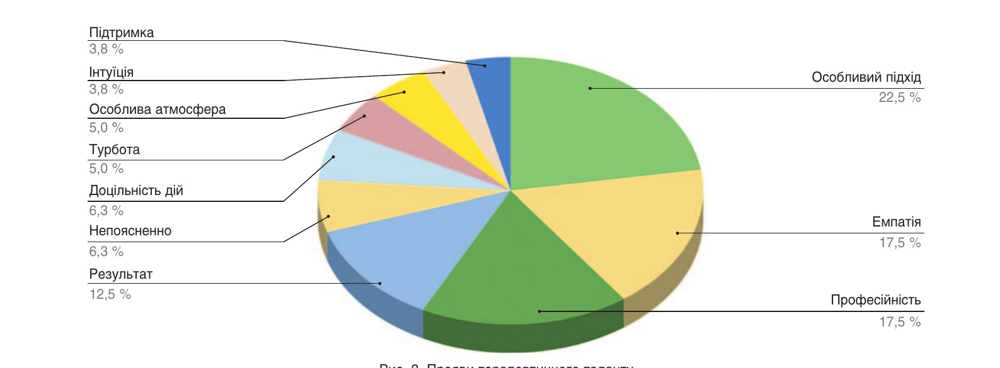
Рис. 2. Прояви терапевтичного таланту.
| Фактор | Прояв ТТ | Через метафору | Визначення ТТ | Як зрозуміли ТТ | Як проявлявся ТТ |
|---|---|---|---|---|---|
| Обдарованість | Обдарованість/покликання | 16,88 | 14,58 | 4,70 | 6,30 |
| Непоясненне | 6,50 | 4,17 | |||
| Особливе емоційне ставлення | Підтримка | 19,48 | 3,80 | ||
| Емпатія | 10,39 | 19,79 | 10,50 | 17,50 | |
| Здатність викликати довіру | 9,09 | 4,17 | 16,30 | ||
| Відвертість намірів | 5,80 | ||||
| Створення особливої атмосфери | 7,00 | 5,00 | |||
| Турбота | 5,00 | ||||
| Професіоналізм | Професіоналізм | 14,29 | 17,71 | 11,60 | 17,10 |
| Уміння бачити багатовимірно | 6,49 | ||||
| Системне мислення | 3,50 | ||||
| Розуміння клієнта/пацієнта, особливостей його характеру | 6,49 | ||||
| Дбайливість та акуратність | 2,60 | ||||
| Доцільність дій | 6,30 | ||||
| Інтуїція | 6,49 | 10,42 | 3,80 | ||
| Дар переконання | 5,80 | 5,80 | |||
| Наявність життєвого досвіду | 1,30 | ||||
| Увага до деталей | 4,70 | ||||
| Результат | 20,90 | 12,50 | |||
| Унікальність/оригінальність | Унікальність навичок | 13,54 | 5,80 | ||
| Нестандартний підхід | 10,42 | 3,50 | 22,50 | ||
| Духовність | 5,21 |
Отримані результати говорять про те, що терапевт, який сприймається як талановитий, крім професійних навичок, має певні особистісні якості та особливий підхід до кожного пацієнта. Це сприяє створенню атмосфери довіри і формуванню надійного терапевтичного альянсу. Тепло, щирість, чуйність, дбайливість, співчуття, уважність до деталей, увага, інтерес і залучення створюють «присутність терапевта», яка відчувається серцем і, можливо, описується респондентами як непоясненне.
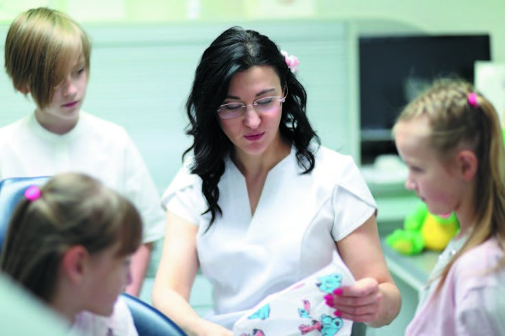
Іншим фактором, який відображає суть терапевтичного таланту, є унікальність/оригінальність (виявляється в особливому підході), що відповідає розумінню таланту як такого: унікальне поєднання здібностей, які дозволяють успішно, самостійно та оригінально виконувати складні завдання. Терапевтичний талант – сплав природної обдарованості, особливого емоційного ставлення, професіоналізму та унікальних міжособистісних якостей, котрі забезпечують особливий підхід до кожного пацієнта/клієнта, що допомагає ефективно взаємодіяти і створювати особливу атмосферу довіри та прийняття, які сприяють позитивним змінам і зціленню.
Чотири виділені фактори: обдарованість, особливе емоційне ставлення, унікальність та професіоналізм – дозволяють описати терапевтичний талант так: високий рівень здібностей людини до терапевтичної діяльності, що має вроджену природу (схильність), але посилений у процесі старанного розвитку особливих навичок та компетенцій, що виявляються насамперед у вмінні створювати і підтримувати особливі емоційні відносини з іншою людиною.
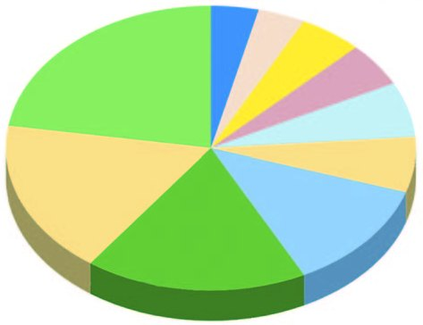
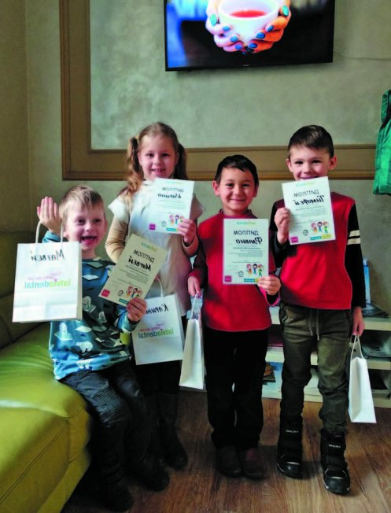
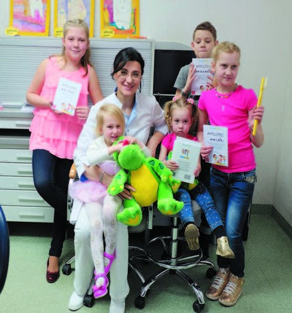
Фото лікаря-стоматолога Анни Юрковської.
Висновки
Дослідження засвідчило, що немає відмінностей у сприйнятті таланту терапевта-медика та гуманістичного психотерапевта: учасники дослідження не виділяли будь-якої специфіки, даючи єдиний опис феномену, що співвідноситься і з його теоретичними описами. Це дає підстави говорити про терапевтичний талант як єдиний для представників помічних професій.
Проведене дослідження підтвердило наявність феномену терапевтичного таланту як особливої та важливої характеристики терапевта, котра може бути розкрита через чотири основні фактори: обдарованість, особливе емоційне ставлення, унікальність/оригінальність (особливий підхід), професіоналізм. Два з названих факторів (обдарованість та професіоналізм) описують природу таланту, з одного боку, як вроджених здібностей (схильностей до терапії та помічного лікувального процесу), а з другого боку, як старанність у розвитку таких здібностей, як компетенції, що виявляються у процесі-результаті терапії.
Два інші фактори описують суть терапевтичного таланту, а саме високі здібності до особливого емоційного ставлення, створення та підтримки особливої емоційної атмосфери. Часто таке ставлення до іншого можна описати не як відносини рівних, а як ставлення старшого (більш могутнього) до молодшого (слабшого). Ми знаходимо таке відображення в ідеалізованому клієнтами образі талановитого терапевта – Чарівник, Ангел Хранитель, Провідник та ін. Можна припустити, що, відкриваючи в терапії свою вразливу (дитячу) частку, пацієнт сподівається спертися на сильнішу, турботливу (материнську) фігуру. У свою чергу парентифікація та схильність бути в батьківській позиції є визначальними чинниками вибору професії психолога і психотерапевта та розвитку важливих для фахівця якостей (Begni, 2005).
Література
- Богатырев Д. К. (2014). Познание. Опыт. Мышление. Интуиция. Интуитивизм // Вестник русской христианской гуманитарной академии. – 2014. – Т. 15. – № 4.
- Бьюдженталь Д. (2015). Искусство психотерапевта. – М.: Корвет.
- Вайнцвайг П. (1990). Десять заповедей творческой личности. – М.: Прогресс.
- Гальтон Ф. (1875). Наследственность таланта, ее законы и последствия. – СПб.: Знание.
- Гарднер Г. (1980). Рамки ума. – М.: Наука. – 250 с.
- Грановская Р. М. (2002). Конфликт и творчество в зеркале психологии. М.: Генезис. – 573 с.
- Карлин Е. (2022). Маршрут построен. Путеводитель по профессии для психологов и психотерапевтов. – М.: Генезис. – 304 с.
- Маслоу А. Г. (1999). Дальние пределы человеческой психики. Перев. с англ. Татлыбаевой А. М. СПб.: Евразия. – 432 с.
- Маслоу А. Г. (2001). Мотивация и личность. Перевод с англ. Татлыбаевой А. М. СПб.: Евразия. – 478 с.
- Мэй Р. (1997). Раненый целитель // Консультативная психология и психотерапия. – 1997. – Т. 5. – № 2.
- Мэй Р. (2001). Мужество творить: очерк психологии творчества / Перевод с англ. М.: Институт общегуманитарных исследований. – 128 с.
- Орлова Н. (2023). Терапевтический талант: исследование через призму метафор (аспект проведенного феноменологического исследования терапевтического таланта) // Исследовательский проект в рамках программы обучения в Балтийском институте психотерапии. – Рига. – 40 с.
- Теплов Б. М. (1985). Способности и одаренность // Избранные труды. М., 1985. – Т. 1. – С. 15–41.
- Серебрякова К. А. (2016). Что такое талант, и нужно ли его открывать? // Вестник практической психологии образования. – 2016. – Т. 13. – № 4. – С. 43–48.
- Ялом И. (1999). Экзистенциальная психотерапия. – М.: Класс.
- Ansar N. (2018). Talent and Talent Management: Definition and Issues // IBT Journal of Business Studies, 14(2):174–86.
- Becker B. E., Huselid M. A. & Beatty R. W. (2009). The differentiated workforce: Transforming talent into strategic impact. Boston: Harvard Business Press.
- Begni I. (2005). Therapists: from family to clients // University of Wolverhampton. – Doctoral Thesis.
- Deery M., Jago L. (2015). Revisiting Talent Management, Work-Life Balance and Retention Strategies // International Journal of Contemporary Hospitality Management, 27(3):453–72.
- Hersoug A. G. (2001). Quality of working alliance in psychotherapy: Therapist variables and patient/therapist similarity as predictors // The Journal of psychotherapy practice and research, 10.4 (2001): 205.
- Kiesler D. J., Watkins L. M. (1989). Interpersonal complementarity and the therapeutic alliance: a study of relationship in psychotherapy. Psychotherapy: Theory, Research and Practice. 1989; 26:188.
- Meyers M. C., van Woerkom M., & Dries N. (2013). Talent – innate or acquired? Theoretical considerations and their implications for talent management. Human Resource Management Review, 23(4), 305–321.
- Nissen-Lie H., & Orlinsky D. E. (2014). Growth, love, and work in psychotherapy: Sources of therapeutic talent and clinician self-renewal. In R. J. Wicks & E. A. Maynard (Eds.), Clinician's guide to self-renewal: Essential advice from the field (pp. 3–24). John Wiley & Sons, Inc.
- Orlinsky D. E. (2014). An Empirically Grounded Theory of Psychotherapist Development // Presented to the Norwegian Psychological Association Congress in Oslo on September 5.
- Rogers C. Р. (1950). A Current Formulation of Client-Centered Therapy // Social Service Review. – V. 24. – 442–450.
- Tyskbo D. (2019). Talent management in Swedish public hospitals. Personnel Review, 48(6), 1611–1633.
- Settanni M., Bronzini M., Carzedda G., Godino G., Manca M. L., Martini L., Provvedi G., Quilghini F., Zucconi A., Francesetti G. (2022). Introducing the QACP: development and preliminary validation of an instrument to measure psychotherapist's core competencies. Research in Psychotherapy: Psychopathology, Process and Outcome, 25(2), 211–228. doi: 10.4081/ripppo.2022.599
- Siripipatthanakul Supaprawat and Jaipong, Parichat and Limna, Pongsakorn and Sitthipon, Tamonwan and Kaewpuang, Pichart and Sriboonruang, Patcharavadee (2022). The Impact of Talent Management on Employee Satisfaction and Business Performance in the Digital Economy: A Qualitative Study in Bangkok, Thailand. Advance Knowledge for Executives, 1 (1). – 1–17.
- Skuza А., Woldu H. G., Alborz S. (2022). Who is talent? Implications of talent definitions for talent management practice // Economics and Business Review. – V. 8 (22). – № 4. – 2022.